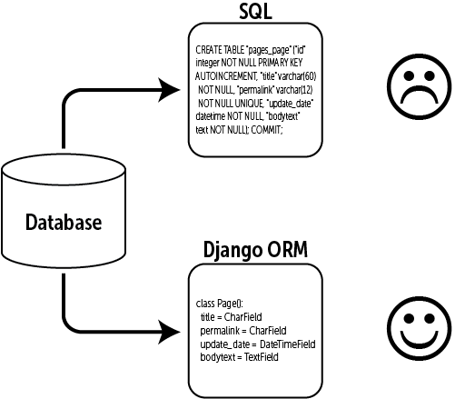

DAI, Django Model
Desarrollo de Aplicaciones para Internet
Modelos en Django

Model
Django utiliza un ORM para Bases de Datos
SQL

Tablas como Clases
from django.db import models
class Musician(models.Model):
first_name = models.CharField(max_length=50)
last_name = models.CharField(max_length=50)
instrument = models.CharField(max_length=100)
class Album(models.Model):
artist = models.ForeignKey(Musician, on_delete=models.CASCADE)
name = models.CharField(max_length=100)
release_date = models.DateField()
num_stars = models.IntegerField()
Llave primaria automática
Por defecto, django asigna una llave primaría automática
id = models.AutoField(primary_key=True)
Relacciones
Uno a muchos
from django.db import models
class Manufacturer(models.Model):
# ...
class Car(models.Model):
manufacturer = models.ForeignKey(Manufacturer,
on_delete=models.CASCADE)
# ...
Relacciones
Muchos a muchos
from django.db import models
class Topping(models.Model):
# ...
class Pizza(models.Model):
# ...
toppings = models.ManyToManyField(Topping)
Opciones meta
Todo lo que no es un campo
from django.db import models
class Ox(models.Model):
horn_length = models.IntegerField()
class Meta:
ordering = ["horn_length"]
permissions = (("can_edit",
"puede editar animales"),)
Métodos
class Person(models.Model):
first_name = models.CharField(max_length=50)
last_name = models.CharField(max_length=50)
birth_date = models.DateField()
def baby_boomer_status(self):
"Returns the person's baby-boomer status."
import datetime
if self.birth_date < datetime.date(1945, 8, 1):
return "Pre-boomer"
elif self.birth_date < datetime.date(1965, 1, 1):
return "Baby boomer"
else:
return "Post-boomer"
@property
def full_name(self):
"Returns the person's full name."
return '%s %s' % (self.first_name, self.last_name)
Sobrecarcagando los métodos por defecto
class Blog(models.Model):
name = models.CharField(max_length=100)
tagline = models.TextField()
def save(self, *args, **kwargs):
do_something()
super().save(*args, **kwargs) # Call the "real" save() method.
do_something_else()
Shell
Scripts en el ambiente de Django
$ python manage.py runscript delete_all_questions
# scripts/delete_all_questions.py
from polls.models import Question
def run():
# Fetch all questions
questions = Question.objects.all()
# Delete questions
questions.delete()
Usando BD NO-SQL
Con mongoengine,
que es super parecido
from mongoengine import *
connect('encuestas', host='localhost', port=27017)
class Choice(EmbeddedDocument):
choice_text = StringField(max_length=200)
votes = IntField(default=0)
class Poll(Document):
question = StringField(max_length=200)
pub_date = DateTimeField(help_text='date published')
choices = ListField(EmbeddedDocumentField(Choice))
(El resto de Django sigue usando SQL)